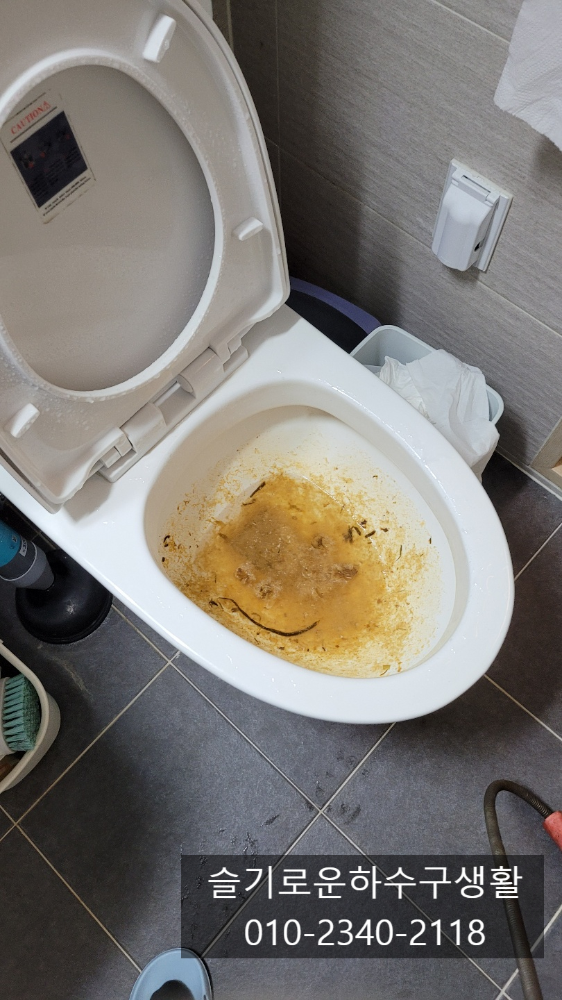
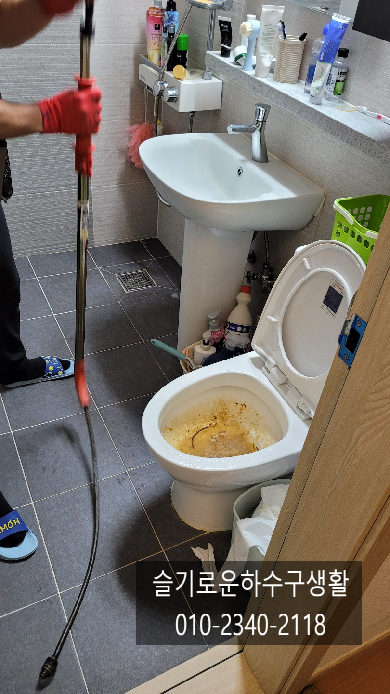
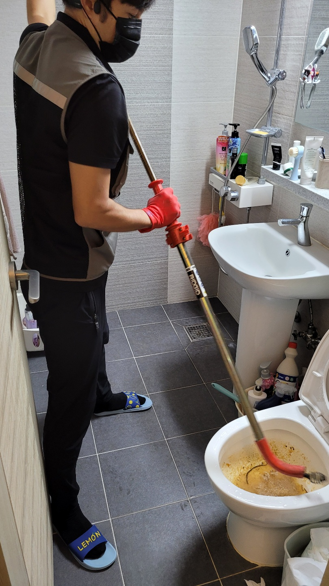
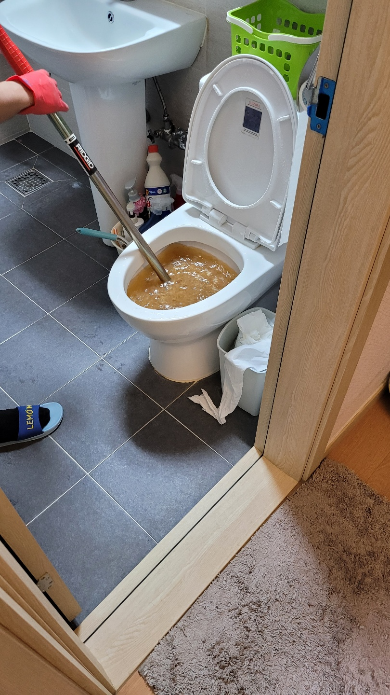
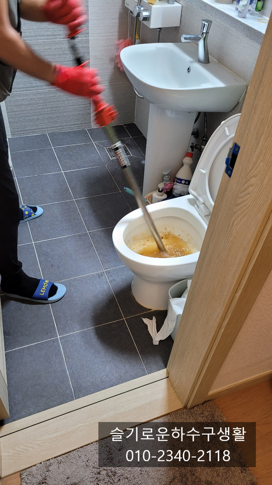
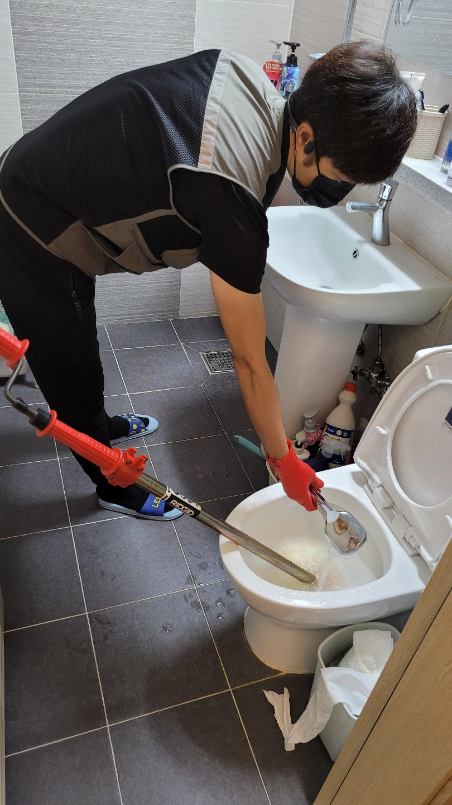
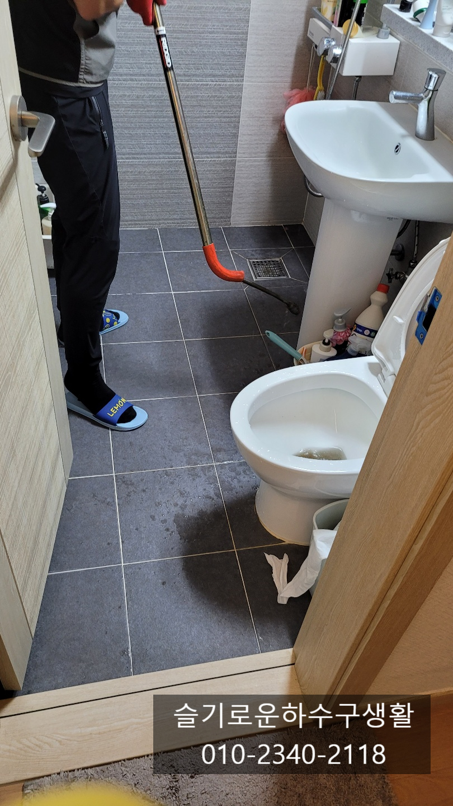

🏠 인계동 오목천동 호매실동 변기막힘 권선구 변기막힘해결
수원 변기막힘 전문 시공 후기

📋 작업 개요
- 위치: 수원
- 서비스 유형: 변기막힘, 하수구막힘, 배관막힘, 뚫는업체
- 작업 일시: 2021. 10. 10. 20:49
- 업체명: 하수구수사대 (010-5615-2118)
🔍 문제 상황
인계동 오목천동 호매실동 변기막힘 권선구 변기막힘해결
오늘은 수원변기막힘으로 호출해주신
고객님 집으로 출동하였습니다.
변기는 주로 단순하게 휴지나 물티슈 또는
음식물을 넣어 막히는 경우가 대부분인데
가끔은 오래된 변기성능저하나
배관에서 막혀 아무리 위에서 작업을
해도 뚫리지 않는 경우가 있습니다.
보통 변기내부에서만 막힌다면 물을
내렸을때 변기밖으로 흘러 넘친다면
변기 내부에서 막힌것이고 또는 변기
하단에 백시멘트나 실리콘 주변으로
물이 새어나온다면 배관이 막힌것으로
판단할 수 있는데 간혹 먼구간에서 막히면
이러한 증상이 없을수도 있기때문에 전문가를

🔎 원인 분석
💡 전문가 진단: 슬기로운하수구생활010-2340-2118
불러주시는게 좋습니다.
오늘현장은 음식물을 버리다 막힌 현장인데
도착하니 물이 내려가지 않고 있는 상태였어요.
아마도 음식물 덩어리가 큰것들이 변기에서
나가는 구멍에 막혀서 못나가는것 같아
기본적인 관통기장비로 뚫는 작업을 진행합니다.
대부분 고객님들께서 철물점에서 판매되는 장비로
해결이 가능하지만 변기 깊숙한곳에서 막히게 되면
장비가 그곳까지 못가는 경우가 많습니다.
이럴땐 압축기로 펌핑을하면 되는경우가
있는데 정말 꽉막혔다면 그 부분을 건드려줘야
뚫리게 됩니다.
휴지나 물티슈 같은 단순막힘은 비교적
간단하게 뚫리지만 음식물이 짬뽕,족발,치킨,생선뼈 등등
이런게 들어가면 변기안쪽에서 나가지않고
남아있게되면 물은 나가지만 대변과 휴지가

🔧 작업 과정
들어가기만하면 막히는 증상이 나타납니다.
그러다 뚫리고 또 막히고 한다면
변기안에 무엇인가 들어가 있다고 판단하시면 됩니다.
관통기를 천천히 돌리면서 밀어넣으니
물이 서서히 빠지기 시작합니다.
슬기로운하수구생활
010-2340-2118
우선 변기 지져분하게 묻어있는 음식물을 씻어보낸후
변기내부를 확인해야합니다.
두가지 방법이 있는데 내시경카메라로 확인하는 방법과
휴지를 여러번 내려 테스트해보는 방법이 있는데
확실하게 하기위해 내시경카메라로 확인배보기로 합니다.
간혹 변기마다 틀려 내시경카메라가 들어가지
않을수도 있습니다.
내시경카메라로 확인해 보니 변기안에
이물질들이 모두 배관을 배출되었어요.
음식물이 딱딱하지 않아 관통기만으로도
충분히 해결이 된 현장입니다.
혹시 모를 변기문제가 있으니 휴지 테스트도
해주는 작업도 함께 진행하였습니다.
변기안에 이물질이 없으니
휴지도 시원하게 잘 내려갑니다.
간혹 물통에 물이 적어 밀어주는 힘이
약하여 오물이 내려가지 않는 경우도


✅ 작업 완료
있으니 물양도 잘 체크해주시는게
좋습니다.
" 슬기로운하수구생활" 팀은
서울,경기,인천 전지역에서 활동하고 있으며
최신장비를 보유하고 있어
어떤 현장이든 자신있으니
언제든지 연락주세요^^




⚠️ 하수구 배관 막힘 예방 및 관리 가이드
- ✅ 머리카락, 비닐, 물티슈 등 물에 분해되지 않는 이물질은 하수구 유입을 절대 금지해 주세요.
- ✅ 하수구 거름망을 씌우고 모여진 이물질은 주기적으로 쓰레기통에 바로 비워주셔야 합니다.
- ✅ 배관 노후가 심할 경우 이물질이 더 쉽게 걸리므로 주기적인 배관 세척(고압세척 등)을 권장합니다.
- ✅ 작업 후 1년 이내 재발 시 하수구수사대에서 무상 A/S 보증 서비스를 제공합니다.
💡 핵심 정리
- 확실한 장비 작업(내시경 점검 및 샤프트 스케일링)으로 원인을 뿌리 뽑습니다.
- 작업 후 1년 이내에 동일한 부위 재발 시 100% 무상 A/S 서비스를 보장합니다.
- 서울 · 경기 · 인천 전 지역에 24시간 언제든 긴급 출동할 수 있도록 항시 대기 중입니다.
❓ 자주 묻는 질문 (FAQ)
🚨 수원 변기막힘 문제로 고민이신가요?
정확한 원인 진단과 확실한 시공으로 재발 없는 해결을 약속드립니다.
24시간 긴급 출동 | 서울 · 경기 · 인천 전지역 | 1년 내 재발 시 무상 A/S